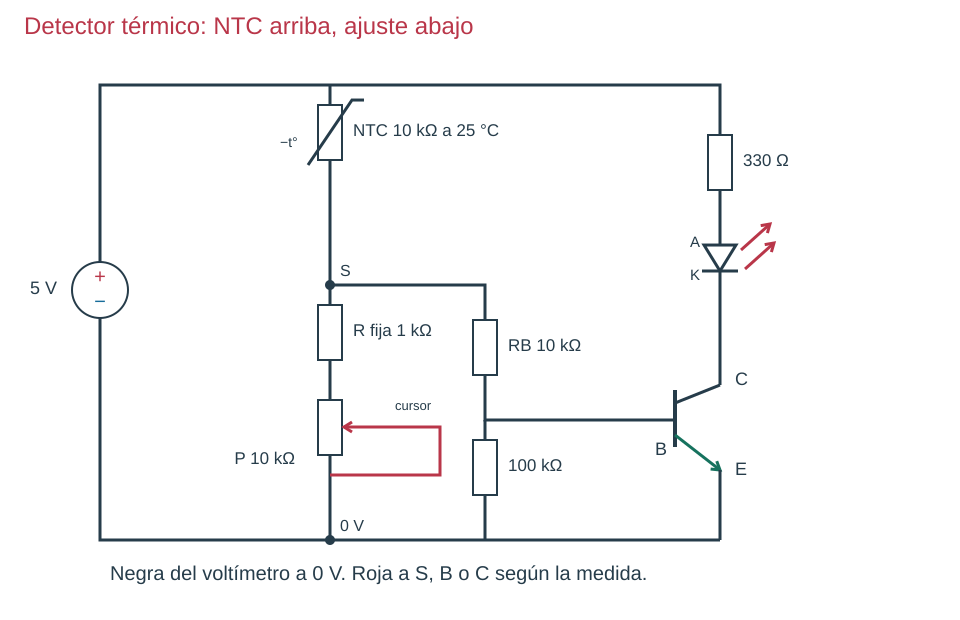

Contenido

Por qué la NTC va arriba
Al calentarse, la NTC baja su resistencia. Si está arriba, cae menos tensión en ella y la salida S sube: entra más corriente por la base y el LED se enciende. Es el mismo razonamiento de la LDR, con el sensor colocado al revés porque cambia al revés.
Tu profesor os dirá qué vía hace vuestro equipo: con la NTC de verdad o con resistencias que la imitan. Haced solo la vuestra.
Vía A · Con la NTC de verdad
- Mide la NTC sola con el polímetro en Ω 20k a temperatura del aula. Después sujétala un rato entre los dedos y mide otra vez: su resistencia debe bajar. Suéltala y mide cuando vuelva a enfriarse.
- Sin fuente: + → NTC → S → resistencia fija de 1 kΩ → potenciómetro de 10 kΩ → −.
- Conecta y mide S sin base. Desconecta.
- Une S a la base por la de 10 kΩ, con la salida de transistor y LED que ya conoces.
- Ajusta el potenciómetro hasta que el LED cambie al calentar la NTC con los dedos. Mide S, VCE y la de 330 Ω a temperatura ambiente, calentando y al volver a enfriarse.
Vía B · Con resistencias en lugar de la NTC
Pon en el lugar de la NTC una resistencia de 22 kΩ, luego una de 10 kΩ y luego una de 4,7 kΩ, desconectando entre cambios. Imitan una NTC que se va calentando.
| Resistencia arriba | Cálculo de S sin base (abajo 1,5 kΩ) | Qué esperas |
|---|---|---|
| 22 kΩ | 5 · 1,5 / 23,5 = 0,32 V | LED apagado |
| 10 kΩ | 5 · 1,5 / 11,5 = 0,65 V | Empieza a conducir o sigue apagado |
| 4,7 kΩ | 5 · 1,5 / 6,2 = 1,21 V | LED encendido |
El ajuste de abajo vale 1,5 kΩ: la fija de 1 kΩ más 500 Ω del potenciómetro (mídelo sin fuente, en Ω 2k, antes de montar).
Escribe solo lo que has comprobado
Con estos datos sabes cómo responde el circuito a una resistencia, no a una temperatura. No escribas «se enciende a 40 °C»: para eso habría que medir la NTC con un termómetro a distintas temperaturas. Escribe lo que viste: «al calentarla con los dedos, la resistencia bajó de 10 a 8 kΩ y el LED pasó de apagado a débil».
| Lo que ves | Qué compruebas |
|---|---|
| La NTC cambia pero S casi no | Revisa el ajuste de abajo y dónde están las puntas. |
| S cambia pero el LED no | Prueba la salida con el cable de prueba en la base y mide VCE. |
Equipo: copiad vuestras tres medidas en la tabla de la NTC de vuestra vía, en el apartado 2 de la Comprobación del equipo.
Ahora tú. Informe, apartado 6.3: tus tres medidas (ambiente, calentando, enfriando; o 22, 10 y 4,7 kΩ), di qué vía hiciste y explica la cadena: calor → resistencia de la NTC → S → LED.
Ver solución
Al calentar, la NTC baja su resistencia; como está arriba, S sube; entra más corriente por la base y el transistor deja pasar más corriente por el LED.
Compruébalo
Decide si cada frase es verdadera o falsa.
00:00: